Project 04/ 08
Pneumatic Gripper
A soft robotic end-effector for a drone that can pick up many different object shapes.

Soft robotics is a developing field in which air pumps inflate a shape so that it actuates under different pressures. Skills used: researching, writing a research proposal, making molds, iterative design, pumps and valves, and material science.
Theory
One side of each finger has bellows that inflate under higher internal pressure while the other side stays the same length. That makes the finger curl.
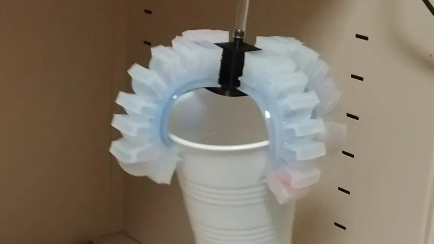
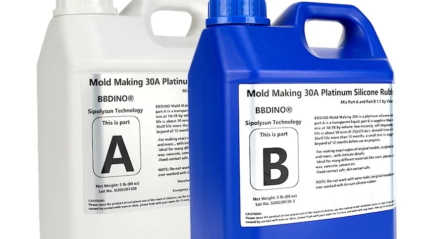
First iteration
As a proof of concept we used a four-finger mold sourced online that came as a single part. We printed the mold, degassed the silicone in a vacuum chamber, and poured it. To test strength, we rigged the gripper against a scale and inflated a single finger with a manual pump. The fingers inflated asymmetrically, so we moved to another model.
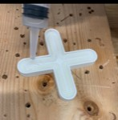
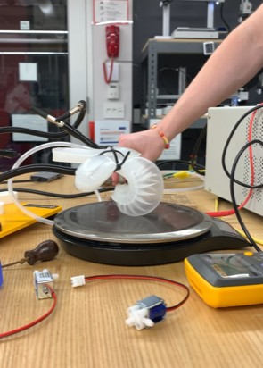
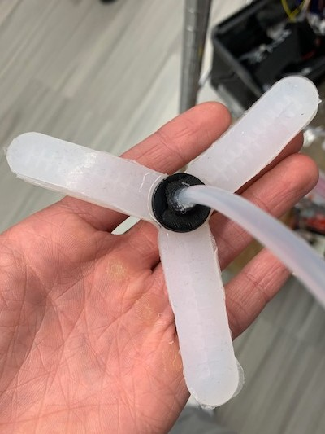
Second iteration
The second model, also sourced online and cast the same way, had three fingers instead of four. It showed the same asymmetry. Next we tried casting individual fingers and joining them to a central hub. Most online models are closed source, so I designed the mold myself.
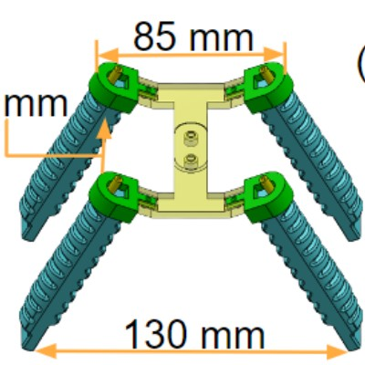
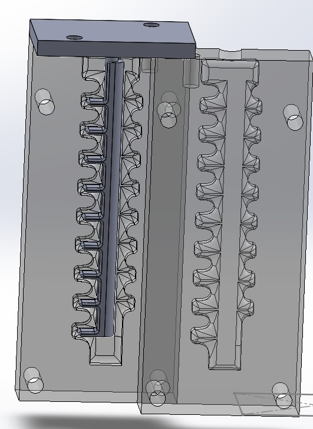
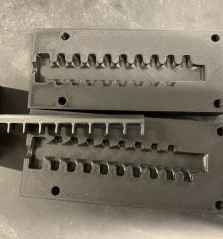
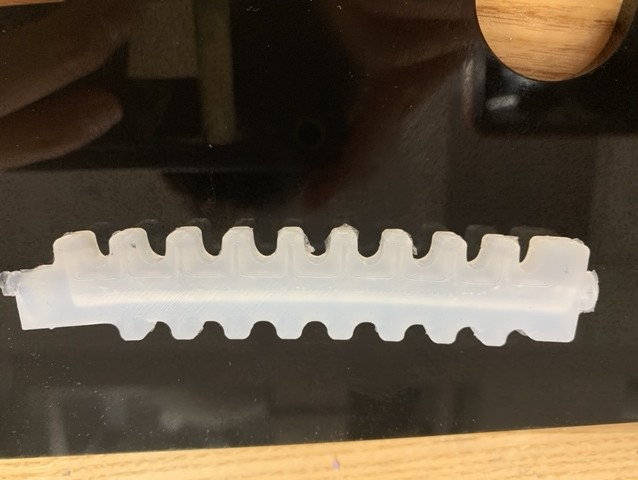
First functional gripper
After several iterations and many castings, this was the first functional gripper.
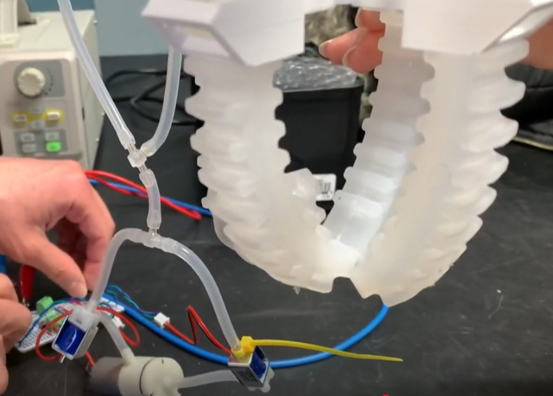
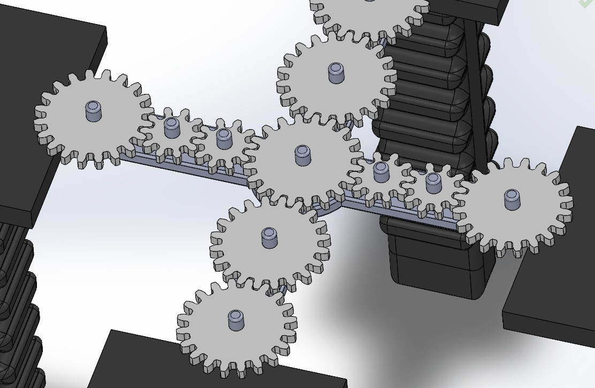